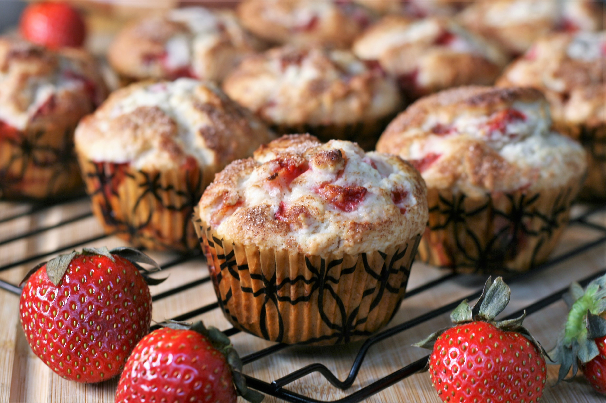

Description
Make some delicious strawberry muffins with this recipe!
Ingredients
- 0.75 cup white sugar
- 0.5 cup butter, softened
- 1 egg
- 2 cups all-purpose flour
- 2 teaspoons baking powder
- 0.5 teaspoon salt
- 0.5 cup milk
- 0.5 teaspoon vanilla extract
- 1.5 cups chopped strawberries
- 3 teaspoons white sugar
- 0.5 teaspoon ground cinnamon
Steps
- Preheat the oven to 200 degrees C. Grease a 12-cup muffin tin or line with paper liners.
- Beat 3/4 cup sugar and butter together in a mixing bowl using an electric mixer until creamy. Add egg and mix well.
- Sift flour, baking powder, and salt together in a small bowl. Add flour mixture and milk alternately to butter mixture until combined. Stir in vanilla extract. Gently stir in strawberries.
- Spoon batter into the prepared muffin cups. Combine 3 teaspoons sugar and cinnamon in a small bowl and sprinkle over tops of muffins.
- Bake in the preheated oven until a toothpick inserted into the center of a muffin comes out clean, 20 to 25 minutes.
Return to top